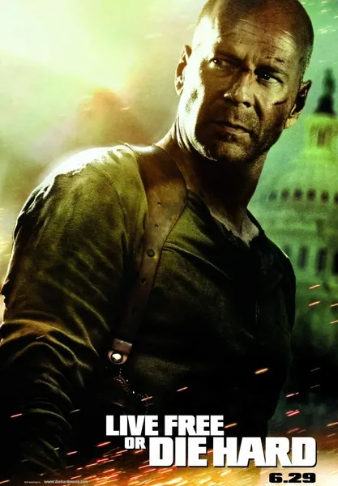

Крепкий орешек 4.0
Live Free or Die Hard
2007
Боевик, Триллер
В результате кибератаки на американскую инфраструктуру выходят из строя светофоры, фондовая биржа, электросети — а в конечном счете и всё остальное. Детектив Джон Макклейн — человек «аналоговой» закалки в цифровом мире — должен доставить хакера, выступающего свидетелем, через охваченный хаосом город. Фильм нарочито утрирует уязвимости («fire sale» — каскадный сбой всех систем), но главная мысль серьёзна: цивилизация, построенная на электричестве и сети, падает за часы. Отличное развлекательное кино, затрагивающее при этом важную тему критически важной инфраструктуры.
Описание на английском
A cyber attack on American infrastructure takes down traffic lights, the stock exchange, power grids — and eventually everything. Detective John McClane, an analog man in a digital world, must deliver a hacker witness across a burning city. The film deliberately exaggerates the vulnerabilities (a 'fire sale' cascading every system at once), but the core idea is serious: a civilization built on electricity and networks falls within hours. Great popcorn with a real layer about critical infrastructure.